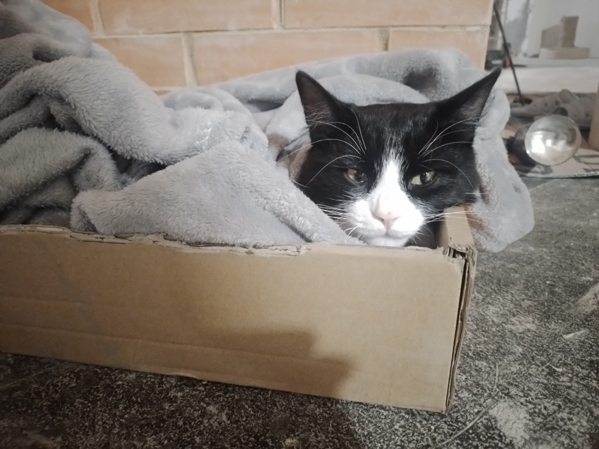
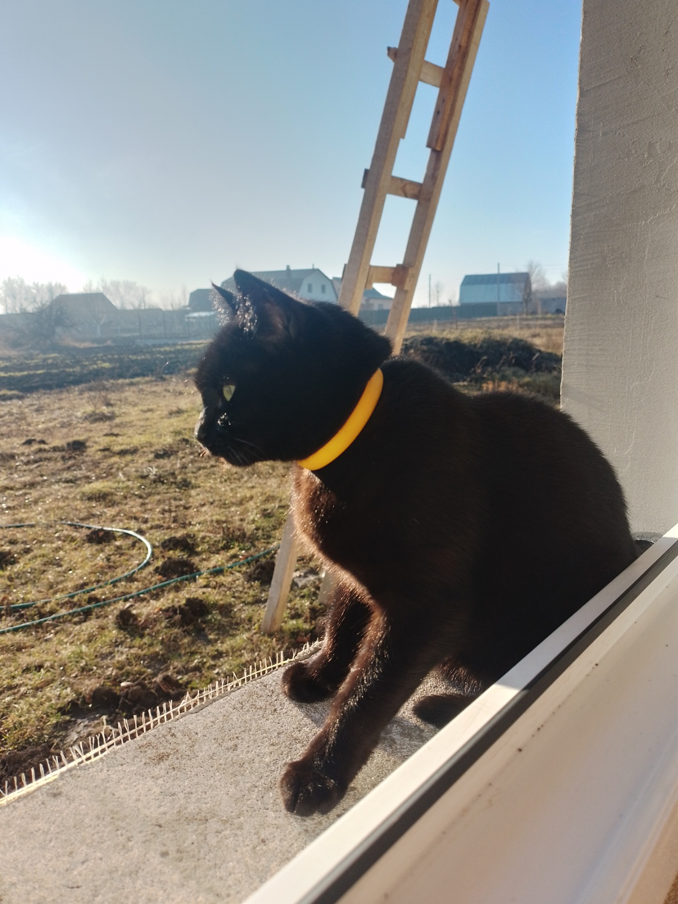

Мої котики
 
В мене є два котики. Котики мої дуже милі, але можуть зробити трохи шкоди.
Першого кота звати Леонід. В нього чорно-біла шерсть і зелені очі.
Друга кицька має ім'я Карамелька. В неї повністю чорна шерсть і також зелені очі.
Вона дуже добра і майже не робить шкоди.